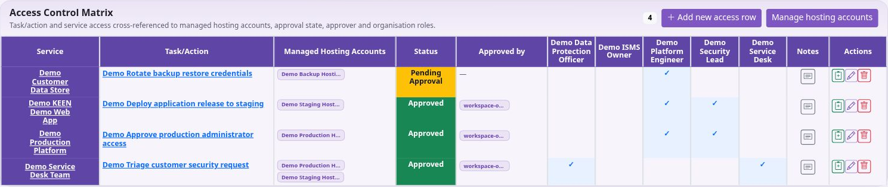
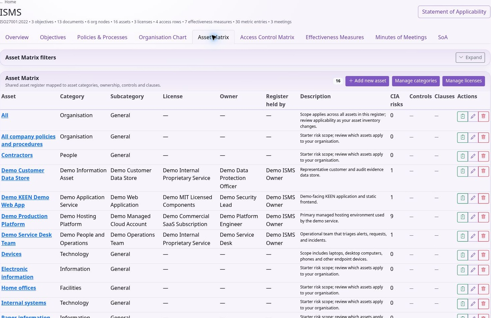

Using KEEN
People, assets and access
Chapter 10 of 15
People, suppliers and assets

Organisation chart, people, vendors and assets
Build the organisation chart
In ISMS → Organisation Chart, create a node with name, type, optional parent, users and description. Use parents to represent your organisational hierarchy. Associate the relevant controls and clauses, save and inspect the chart; its zoom and reset controls help explore larger structures. Keep roles and people distinct so a personnel change does not erase the meaning of the role.
Maintain the People directory
In People & vendors → People, enter name, optional email and position, an optional KEEN account and organisation role, assets/devices used, and notes. A Person need not have a login. Select the person before adding assurance records.
For each assurance record, choose category, requirement or training, status, completion and expiry dates, authoritative source, evidence link and notes. Examples include screening, training and policy acknowledgement. Record the source, result and date of the check. Review expiring assurance records and retain appropriate evidence; arrange screening and training through the responsible team or provider.
Connect suppliers to assets
In Vendors, record supplier name, description, website, contact and assets supplied. An asset has one supplying vendor: assigning it to a new vendor moves that relationship. Check the current supplier before saving. Connect related supplier risks and evidence through the appropriate risk and evidence records.
Maintain the asset matrix
In ISMS → Asset Matrix, enter the asset, category, subcategory, licence where applicable, owner, “Register held by” relationship, description and relevant controls and clauses. Maintain category/subcategory and licence lists using their associated forms. Distinguish ownership and organisational responsibility from the person currently using a device.
Open the asset detail page to review relationships and changelog. Where available, Sample into audit links it to a review. Keep its risk associations and supplier/person assignments consistent when equipment moves or a service is retired. Assess technical controls using operational evidence linked to the asset.
Record access responsibilities
The Access Control Matrix records Task/Action, Service, Managed Hosting Accounts, Status, Approved by, Roles and Notes. Add a hosting-account record first if needed, using its name, account ID and descriptive notes. Link the intended roles and document the approval basis. Review entries against actual upstream permissions during access reviews.
This assurance record describes intended access. Provision and revoke access in the relevant external service. Application Configuration records document context. Apply operational changes in the relevant application. Put passwords and API keys in the designated secret store, never these records.
Maintain a connected asset register
The ISMS Asset Matrix and the assets used by risk assessments share the same underlying asset records. Create a reusable asset once and select it in the relevant risks, supplier records and personnel relationships. An asset may represent a specific device, an information set, a service or an agreed group of assets; state that boundary in its description.

- Maintain the organisation chart so that the asset’s owner and register custodian can refer to the correct organisational nodes. These fields are links to nodes in the organisation chart.
- In ISMS → Asset Matrix, create or edit the asset’s name and description. Select its category and a subcategory belonging to that category. Select a licence from the managed list where it applies.
- Set Owner and Register held by. Ownership identifies responsibility for the asset; the register relationship identifies who maintains its inventory information.
- Link controls and clauses in the selected framework. Save and open the asset detail to inspect those links and the changelog.
- In People and Vendors, associate devices/assets with the relevant people and supplier. In Risks, select the existing asset for assessments affecting it.
- When the asset changes, review its risks, users, supplier and control relationships together. A name change should not require creating a duplicate asset.
Example: create “Staff laptops” with a description defining which devices are included, an IT ownership node and a register custodian. Link the relevant endpoint controls, associate the supplier and people, and use that asset in a loss/theft risk. Sample the asset record together with actual endpoint evidence during an audit; the asset entry alone only establishes what is recorded in the register.
The Access Control Matrix connects a task or permitted action to a service asset, hosting accounts, approval information and one or more organisational roles. It documents responsibilities and access decisions. Apply permissions in the relevant service. Compare the matrix with collected account/access evidence when reviewing actual access.